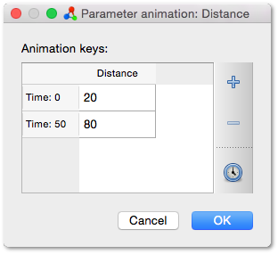
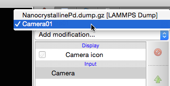
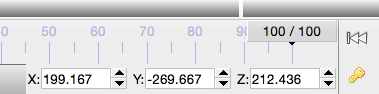

Parameter and camera animations
In addition to simply visualizing a simulation trajectory, OVITO provides powerful animation capabilities, which let you animate the virtual camera, modifiers, or visual parameters. The following sections explain OVITO’s animation system in more detail.
{kind=link}
Animation frames vs. simulation frames
After loading a simulation sequence into OVITO, the timeline below the viewport area indicates the length of the current animation interval. Animation frame numbers start at zero in OVITO. Thus, an animation ending at frame 100, for example, consists of 101 video frames.
It is important to point out the semantic difference between simulation frames (i.e. the imported simulation snapshots) and animation frames, which are the time units used by OVITO’s animation timeline. Normally there is a one-to-one mapping between the two, i.e., the number of animation frames in OVITO’s timeline is automatically adjusted to match the number of frames of the loaded simulation trajectory. This default behavior can be overridden in the Animation settings dialog. Then you will be in control of the animation length. If you extend the animation interval beyond the number of imported simulation frames, you will get additional static video frames at the end of the rendered animation.
Furthermore, the Configure trajectory playback dialog, which is accessible from the External file panel (see screenshot), provides control of how the frames of the simulation trajectory get mapped to animation frames. The Playback rate setting allows you to specify a mapping that is not one-to-one. For example, a playback rate of 1/2 stretches the simulation sequence to extend over twice as many animation frames. Each snapshot of the simulation will then be visible for two consecutive video frames. A playback rate of 2/1, in contrast, compresses the playback of the simulation sequence to half of the animation frames. Then, every other simulation frame gets skipped in the rendered animation.
The Starting at animation frame setting specifies where on OVITO’s timeline the playback of the simulation trajectory begins. By default, it starts immediately at animation frame 0, but you can change this number, e.g. to insert static frames at the beginning of a movie.
Note that OVITO provides the possibility to insert several simulation datasets into one scene to show them simultaneously side-by-side or on top of each other. By default, OVITO adjusts the length of the timeline to fully accommodate all loaded trajectories.
{kind=link}
Playback speed
In the Animation settings dialog, you set the playback speed (frames per second) of the current animation. This number determines the frame rate of video files produced by OVITO (e.g. AVI or MPEG). It also affects the playback within OVITO’s viewports, which, however, typically occurs at a lower effective rate because loading the next simulation snapshot from disk can easily take too long to reach the real-time frame rate.
Animating by means of time-dependent formulas
Simple animation effects can be readily achieved by using the Expression selection and Compute property modifiers. These modifiers allow you to enter mathematical formulas or Boolean expressions to select subsets of particles or to manipulate certain particle properties (e.g. position, color, transparency, etc.).
Within such math expressions, you can incorporate the special variable Frame, which evaluates to the current animation frame number. Thus, whenever you reference this variable in an expression, the formula becomes time-dependent and OVITO will recompute the results on every animation frame.
{kind=link}
Animation via keyframes
OVITO also provides a key-based animation framework. It lets you specify the value of an animatable parameter at certain animation times (for example at the beginning and at the end of the animation). In between these keyframes, the value of the parameter is then determined using smooth interpolation (typically linear).
{kind=link}
The screenshot on the right shows the parameter panel of the Slice modifier as an example. Animatable parameters are indicated by an A button next to the input field. This button opens the animation key dialog for that parameter, which allows you to define new animation keys. Animation keys are time-value pairs.
In the next screenshot on the right, two animation keys have been defined for the Distance parameter of the slicing plane, one at frame 0 and the other at frame 50. Thus, the parameter will have a value of 20.0 at the beginning of the animation and reach 80.0 at the second animation keyframe.
Note that an animatable parameter always has at least one animation key. As long as there is only that single key, it defines the constant value of the parameter. Once you add another key OVITO will interpolate between the key values and the parameter actually becomes animated.
Auto-key mode
The animation toolbar at the bottom of the main window contains a button with a key icon, which activates the so-called Auto-key mode:
{kind=link}
While this mode is active, the time slider background is highlighted red and any change made to an animatable parameter in the program will automatically generate a new animation key at the current animation time. For example, after activating Auto-key mode, you can jump to animation frame 0 using the time slider and set the Distance parameter of the Slice modifier to a value of 20. You then go to the last frame of the animation and change the parameter value to 80. Each of these two parameter changes results in the creation of a new animation key at the corresponding animation time.
Don’t forget to deactivate Auto-key mode after you are done creating the desired animation keys. Otherwise, you might inadvertently define more keys for other parameters which you don’t want to animate. The Auto-key mode provides a convenient alternative for creating new animation keys, which can be faster than using the animation key dialog introduced in the previous section.
Editing keys using the animation track bar
The track bar is located right below the time slider and displays the created animation keys for the currently selected scene object and its parameters:
{kind=link}
Each key is represented by a small marker at the corresponding position of the timeline. Positioning the mouse cursor over a marker will show the key’s information in a small tooltip window. You can use the mouse to drag animation keys to a different position on the timeline. Right-clicking on a key opens a context menu that allows you to delete the key.
Note that the track bar will only display the animation keys of parameters that are actually animated, i.e., which have at least two keys defined. Thus, as soon as only one key is left, it will automatically disappear from the track bar.
Animating the camera
{kind=link}
To animate the camera, you first have to create a camera object. This is done from a viewport’s context menu as shown by the screenshot on the right. The new camera object will be placed in the three-dimensional scene at the current viewpoint. Furthermore, the active viewport will be linked to the new camera object so that when the camera is moved, the viewport will be updated to show the scene as seen through the new camera position. Conversely, if you use the zoom, pan, or orbit functions to adjust the viewport’s view, the camera object in the scene will be moved accordingly.
{kind=link}
The newly created camera object is visible in the other three viewports. You might have to zoom out to see it. Click on the camera object in the viewports to select it and show its parameters in the command panel. Alternatively, you can select the camera object using the object selector box located in the top right corner of the main window, which lists all objects in the current scene:
{kind=link}
The camera object can be moved around in space using the Move tool and the Rotate tool in the main toolbar:
{kind=link}
While one of these modes is active, you can drag the camera object with the mouse; or use the numeric input fields that appear in the status bar area, which let you enter the position coordinates and Euler orientation angles of the selected object:
{kind=link}
Similar to other parameters, the position and the orientation of the camera object can be animated using the keyframing approach. To create animation keys for the camera position or rotation, you first have to activate the Auto-key mode as described above. If you now change the camera’s position at different animation times, animation keys will automatically be created and the camera will move on an interpolated path between the keyframe positions. The created animation keys are also shown in the track bar while the camera is selected.
By the way, instead of animating the camera’s position, you can also animate the simulation box and let it rotate, for example. This is done in an analogous way by selecting the simulation box and using the Rotate tool while Auto-key mode is active.